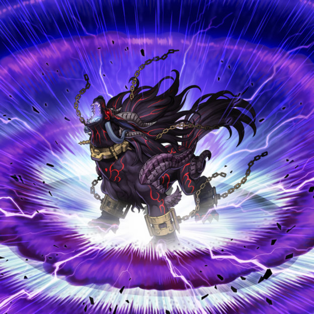

破械
裁定
自己场上的怪兽被战斗破坏的效果在伤害步骤结束时发动。
「破械冥官 篁」只取魔法卡为对象发动①效果，也能对应这个效果发动「灰流丽」。
「那张卡破坏」这类文本的那张卡从怪兽区域移动到魔法陷阱区域，或是反过来的场合，都不算那张卡。但是，也作为陷阱卡使用的陷阱怪兽仍是那张卡。
上类效果破坏的卡被代替破坏了之后，不再视为因这个效果破坏，后续效果如果是「，」类效果，不会继续适用。
被代替破坏的卡视为因代替破坏的那个效果破坏。
以「破械」怪兽卡为对象发动的「破械童子 娑罗摩」的①效果可以对应发动「神之警告」。
「不能把怪兽特殊召唤」适用中，不能以「破械」怪兽卡为对象发动「破械童子 娑罗摩」的①效果。
进行一次连接召唤的效果是包含「把怪兽特殊召唤」的效果，特殊召唤的怪兽不是因为「发动的怪兽的效果而特殊召唤」。因为这个效果从场上离开的怪兽不视为因为效果离场。
「A存在的状态，B的场合」类效果，只需要在B的场合满足A状态则可以发动。连锁处理后不再满足也能发动。
选1张卡代替破坏，那张卡也能有代替破坏的效果时，如果是必须适用的效果，会正常适用。如果是可选适用的效果，那个效果不能适用。
「破械焰魔天 阎摩」不能选不受怪兽效果影响的卡以及不会被效果破坏的卡代破。
对方把恶魔族怪兽在我方特召，我方的「破械神双 罗寂刹」此时不是恶魔族，我方没有其他恶魔族的场合。因为我方没有其他恶魔族怪兽可以破坏，这时不能发动「破械神双 罗寂刹」的①效果。
「破械神双 罗寂刹」①效果处理时，特殊召唤的怪兽以外没有其他恶魔族怪兽的场合，破坏那只特殊召唤的怪兽。
注意
「破械式鬼 斯玛」①效果只有NS才能发动。必须处理炸自己卡。炸自己不能发动②效果。
「双极之破械神」③效果特召的自己从场上离开会回卡组最下方。「破械神 萨玛」②效果，「破械式鬼 萨拉」②效果也一样。
「破械转生」②效果不能炸自身。
「破械唱导」①效果处理必须要能炸到两张才会正常处理。
「破械神 罗寂刹」只能吃特殊召唤的表侧表示怪兽。「破械神 阿罗魃」没这个限制，可以吃不是特殊召唤的怪兽，但一样只能是表侧怪兽。
「破械神双 罗寂刹」②效果只有在自己场上存在Link4以上的「破械」连接怪兽才能发动。
「破械焰魔天 阎摩」只能用表侧表示卡代破。那个①效果只能特召这个回合被破坏的怪兽。
自肃
「破械式鬼 斯玛」①效果(卡组拉人)发动后有恶魔族自肃。
「破械神 萨巴拉」①效果特召的自己只要在怪兽区域表侧表示存在就有恶魔族自肃。「破械焰魔天 阎摩」的①效果特殊召唤的怪兽也一样。
「破械童子 罗鬼刹」①效果(炸自己卡)发动后有恶魔族自肃。
「破械童子 阿罗汉」①效果(炸自己卡，自身特召)发动后有恶魔族自肃。
召唤条件
「破械神 罗寂刹」(蓝狗)素材必须包含「破械神」。「破械神 阿罗魃」，「破械焰魔天 阎摩」也一样。